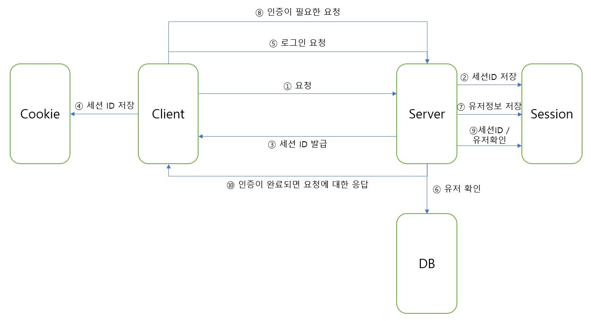

웹 서비스는 서비스를 이용하는 클라이언트와 서비스를 제공하는 서버로 이루어 진다. 클라이언트는 서버에 요청을 보내고 서버는 클라이언트에게 응답을 보낸다. 서버는 클라이언트가 요청한 모든 요청에 응답을 보낼까? 서버는 클라이언트를 식별해서 해당 클라이언트의 요청을 처리해야 한다. 이 과정을 Authentication(인증) 이라 한다.
인증을 위해서 클라이언트는 로그인을 한다. 로그인 과정에서 쿠키와 세션을 이용한다. 왜 쿠키와 세션이 나왔는지 이해하려면 HTTP의 특성을 알아야한다.
미리 알아둘 것
HTTP
HTTP는 HyperText Transfer Protocol의 약자로 통신 규약이다. HTTP의 특징에는 무상태(stateless), 비연결성(connectionless) 가 있다.
무상태 : stateful은 서버가 클라이언트의 이전 상태를 보존한다는 의미이다. stateless는 서버가 클라이언트의 이전 상태를 보존하지 않는다는 의미다. 비연결성 : 클라이언트가 서버에 요청을 하고 응답을 받으면 TCP/IP 연결을 끊는다. 이를 통해 서버의 자원을 효율적으로 관리하게 된다.
무상태 특성에서 문제가 발생한다. 로그인한 사용자의 상태를 유지시켜야하는데 무상태 특성상 서버는 클라이언트의 상태를 보존하지 않는다. 이 문제를 해결하기 위해 쿠키(Cookie)와 세션(Session)을 사용한다.
Cookie
쿠키란 클라이언트가 어떤 웹사이트를 방문할 때 그 사이트가 사용하는 서버를 통해 클라이언트 컴퓨터에 설치되는 작은 기록 정보 파일을 말한다. 이 기록 파일에 담긴 정보는 클라이언트가 사이트를 방문할 때마다 읽히고 새로운 정보로 바뀐다.
인증하는 과정에서 최초로 서버는 쿠키를 생성해서 클라이언트에게 보내고, 클라이언트는 쿠키를 key-value 형식으로 저장한다. 이후 클라이언트가 데이터를 요청할 때 헤더에 쿠키를 담아 서버에 보낸다. 서버는 무상태이지만 인증에 대한 정보가 쿠키에 담겨있으니 더이상 클라이언트에 대한 인증이 필요하지 않다.
Session
세션도 클라이언트의 인증 상태정보를 저장한다. 세션은 서버에 저장된다. 서버는 클라이언트의 요청이 오면 세션ID를 클라이언트에 전달하고, 세션ID를 서버 DB에 저장하게 된다. 이후 클라이언트는 세션ID를 쿠키에 저장하고 서버에 다음 요청부터 헤더에 세션ID를 담아 보내면 서버는 DB에서 세션ID를 확인해서 클라이언트를 식별한다.
Session을 이용한 로그인 및 인증

① 클라이언트가 최초로 서버에 요청을 보낸다.
② 서버는 세션ID를 만들어 세션 저장소에 저장한다.
③ 서버는 헤더에 세션ID를 담아 클라이언트에게 응답을 한다.
④ 클라이언트는 쿠키에 세션ID를 저장한다.
⑤ 클라이언트는 헤더에 세션ID를 담아 서버에 요청을 보낸다.
⑥ 서버는 DB에서 유저정보를 조회한다.
⑦ 유저정보가 조회된다면 클라이언트가 보낸 세션ID를 확인하고 해당 세션에 유저정보를 저장하고 로그인이 처리가 완료된다.
⑧ 유저가 다시 인증이 필요한 요청을 보낸다. 이때도 세션ID를 헤더에 실어 요청한다.
⑨ 서버는 세션ID를 확인하고, 해당 세션에 유저정보가 있는지 확인한다.
⑩ 서버는 인증이 완료되면 클라이언트의 요청에 응답한다.
그럼 세션은 언제 사라지는가?
- 서버가 세션을 날렸을 경우
- 사용자가 브라우저를 종료했을 경우(쿠키는 웹 브라우저 저장소니까)
- 만료 시간이 지날 경우(기본 시간 30분)
세션의 단점은 무엇인가?
클라이언트가 너무 많아서 로드밸런싱을 위해 서버를 여러개 만들면 문제가 발생한다. 세션은 서버마다 가지기 때문에 서버가 여러개일 경우 세션의 데이터를 공유할 수 없다. 이 문제를 해결하기 위해서 각 서버들이 공유하는 세션 저장소를 사용하는 방법이 있다.
JWT 이란?
JWT(JSON Web Token)는 Json 포맷을 이용하여 사용자에 대한 정보를 저장하는 Claim 기반의 Web Token이다. JWT는 사용자 인증을 위해 사용하는 암호화된 토큰이다.
JWT는 아래의 경우 유용하게 사용된다.
- Authorization: 권한부여는 JWT가 가장 일반적으로 사용되는 경우이다. 로그인 이후 클라이언트는 JWT를 헤더에 담아 서버에 후속 요청을 하게되고, 서버는 클라이언트가 접근할 수 있는 경로, 서비스, 자원에 대한 권한이 있는지 JWT를 통해 확인한다.
- Information Exchange: JWT는 클라이언트와 서버 사이에서 정보를 안전하게 전송하는 방법이 된다. 공개키/개인키 쌍을 이용해서 JWT에 서명을 할 수 있어 클라이언트에 대한 식별이 가능하고, 헤더와 페이로드를 사용하여 컨텐츠가 변조되었는지 확인이 가능하다.
JWT 구조
JWT는 세 부분으로 구성되어 있으며 각 부분은 점으로 구분되어진다.
xxxx.yyyy.zzzz
Header(XXXX 부분)
Header는 일반적으로 두 부분으로 나누어 진다. 하나는 토큰의 타입, 다른 하나는 사인을 만든 알고리즘으로 어떤 것을 사용했는지를 나타낸다.
1
2
3
4
5
6
{
"alg": "HS256",
"typ": "JWT"
}
Payload(yyyy 부분)
Payload는 claims을 포함하고 있는 부분이다. claims은 클라이언트 정보와 추가적인 데이터를 가진다. claims은 세 부분으로 나누어지며 각각 registered, public, private claims으로 구성된다.
- Registered claims: Registered claims는 필수적으로 요구되진 않지만 사용할 것을 권고하고 있다. 해당 claims는 미리 정의된 claim의 집합으로 iss(발급자), exp(만료시간), sub(제목), aud(대상) 등으로 구성된다.
- Public claims: Public claims는 마음대로 정의할 수 있다. 다만 충돌이 일어나지 않게 주의해야 한다.
- Private claims: 해당 claims도 사용자 정의 claims이며, 클라이언트와 서버가 공유하기 위한 데이터를 담고 있다.
1
2
3
4
5
6
7
{
"sub": "title",
"name": "user",
"admin": true
}
Signature(zzzz 부분)
서명을 생성하려면 인코딩된 헤더, 인코딩된 페이로드, 비밀 키, 헤더에서 지정된 알고리즘을 사용한다. 예를 들어 HMAC SHA256 알고리즘을 사용한다면, 다음과 같은 방식으로 생성한다.
1
2
3
4
5
6
7
HMACSHA256(
base64UrlEncode(header) + "." +
base64UrlEncode(payload),
secret_key
)